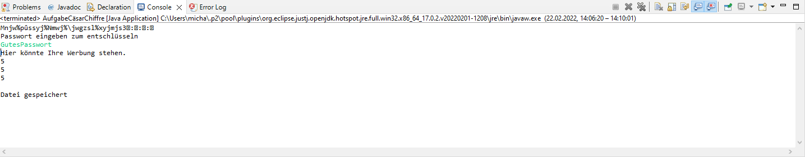

Mit diesem Code wird ein Text verschlüsselt und dadurch unlesbar gemacht.
Wenn man das richtige Passwort eingibt wird es wieder entschlüssel.
import java.io.*;
import java.util.Scanner;
public class AufgabeCäsarChiffre {
public static void main(String[] args) throws IOException {
String Password = "GutesPasswort";
String password = "";
Scanner scanner = new Scanner(System.in);
int offset = 5;
BufferedReader br = new BufferedReader(new FileReader("Text.txt"));
String zeile2 = (br.readLine());
StringBuilder stext = new StringBuilder();
while (zeile2 != null) {
stext.append(zeile2 + "\n");
zeile2 = (br.readLine());
}
char[] text = stext.toString().toCharArray();
char[] vtext = verschluesseln(offset, text);
File text2 = new File("Text2.txt");
BufferedWriter bw = new BufferedWriter(new FileWriter(text2));
bw.write(vtext);
bw.close();
BufferedReader br2 = new BufferedReader(new FileReader(text2));
char[] zeile = br2.readLine().toCharArray();
System.out.println(zeile);
char trypw = '0';
do {
System.out.println("Passwort eingeben zum entschlüsseln");
password = scanner.nextLine();
if (!(password).equals(Password)) {
System.out.println("Versuchen den Text ohne Schlüssel zu knacken? Drücke 'y'");
trypw = scanner.next().charAt(0);
scanner.nextLine();
}
} while (!(password).equals(Password) && trypw != 'y');
char[] etext;
trypw = '0';
int i = 0;
if ((password).equals(Password)) {
etext = entschluesseln(offset, zeile);
System.out.println(etext);
}
else
do {
i++;
etext = entschluesseln(i, zeile);
System.out.println("Wenn folgender Text Sinn ergibt, drücke 'y'");
System.out.println(etext);
try {
trypw = scanner.nextLine().charAt(0);
} catch (Exception e) {
}
} while (trypw != 'y');
BufferedWriter bw2 = new BufferedWriter(new FileWriter(text2));
bw2.write(etext);
bw2.close();
System.out.println("Datei gespeichert");
}
public static char[] verschluesseln(int offset, char[] charArray) {
char[] cryptArray = new char[charArray.length];
for (int i = 0; i < charArray.length; i++) {
int verschiebung = (charArray[i] + offset) % 256;
cryptArray[i] = (char) (verschiebung);
}
return cryptArray;
}
public static char[] entschluesseln(int offset, char[] charArray) {
char[] cryptArray = new char[charArray.length];
int verschiebung;
for (int i = 0; i < charArray.length; i++) {
if (charArray[i] - offset < 0)
verschiebung = charArray[i] - offset + 256;
else
verschiebung = (charArray[i] - offset) % 256;
cryptArray[i] = (char) (verschiebung);
}
return cryptArray;
}
}
